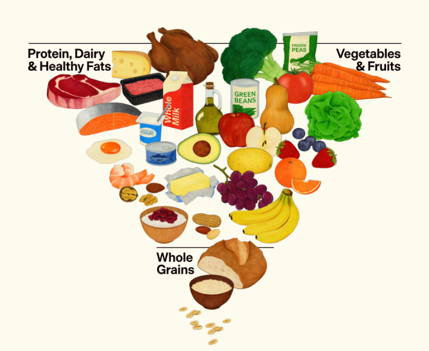

Federal food guidelines recently got a major makeover—and controversy ensued. The new recommendations announced by United States Health and Human Services Secretary Robert F. Kennedy Jr. prioritize foods including full-fat milk, steak, and butter, a major pivot from past recommendations. “We are ending the war on saturated fats,” Kennedy said at a press conference earlier this month.
Confusingly, the recent guidelines also note that saturated fats shouldn’t make up more than 10 percent of total daily calories, aligning with previous advice from both the federal government and the World Health Organization. But it doesn’t add up with the foods promoted on top of the pyramid, and could leave Americans feeling disoriented in the dairy and meat aisles. Plus, the guidelines influence federal food programs, including school lunches and the Supplemental Nutrition Assistance Program (SNAP).
“I’m very disappointed in the new pyramid that features red meat and saturated fat sources at the very top, as if that’s something to prioritize,” Christopher Gardner, a nutrition expert at Stanford University, told NPR. “It does go against decades and decades of evidence and research.”

PERPLEXING PYRAMID: The updated food pyramid recently unveiled by RFK Jr. Image by the U.S. Department of Agriculture/U.S. Department of Health and Human Services.
Saturated fats are one of the two main types of fatty acids. We often consume saturated fats from animal products, including cheese, butter, pork, and beef, along with oils such as palm oil and coconut oil. Meanwhile, unsaturated fats are plentiful in foods such as fish, avocados, seeds, nuts, and cooking oils like soybean and olive oil.
Researchers have linked diets rich in saturated fats to high cholesterol and elevated coronary heart disease risk since the 1950s. Among these pioneering scientists were Ancel Keys, a physiologist who was born on this day in 1904. Early on in his career, he created pocket-sized, nutritionally balanced rations for World War II soldiers at risk of starvation. Some soldiers bemoaned these three-meal packages because they were misused and distributed for weeks on end.
After the war, Keys noticed that heart attacks increased among Americans. He suspected this was connected to lifestyle and diet changes around that time, and wasn’t convinced by the then-common belief that plaque buildup in the arteries naturally resulted from aging.
Read more: “How the Western Diet Has Derailed Our Evolution”
To learn more about the relationship between food and heart health, Keys kicked off a seminal study in the 1950s. His team followed more than 11,000 healthy middle-aged men in seven countries, including the United States, Italy, and Japan, for up to nearly 60 years. The Seven Countries Study was the first large, long-term study spanning multiple countries to examine how risk factors including diet and lifestyle affect people’s odds of developing coronary heart disease. Keys and his colleagues learned that blood pressure, high cholesterol, diabetes, and smoking are “universal risk factors for coronary heart disease.”
This work continues to influence dietary recommendations around the world. For example, they noticed that eating habits in Italy and Greece in the 1950s and ’60s were linked with a low risk of coronary heart disease. In what’s now commonly called the Mediterranean Diet, these populations got most of their fat from olive oil and dined on plenty of cereal products, legumes, fruits, and vegetables, while consuming moderate amounts of fish and low quantities of dairy and meat.
In the decades since Keys’ research began, other studies have arrived at similar findings: that reducing saturated fat consumption can lower levels of “bad” LDL cholesterol, which is known to increase one’s heart attack and stroke risk. That’s because consuming excess saturated fats can inhibit the liver’s ability to break down LDL cholesterol, which builds up in the bloodstream and contributes to plaque accumulation in the arteries.
But some recent studies have complicated this picture: It’s now uncertain whether all foods with saturated fats do the same amount of damage. For example, low-fat dairy might not be any healthier than full-fat dairy, and the latter is sometimes tied to better outcomes. Overall, though, the findings are mixed. Scientists do think that the make-up of dairy products, including vitamins, protein, and gut-benefitting bacteria, could affect how we process this fat.
That said, Keys’ main findings still apply, and experts recommend limiting foods and drinks high in added sugars, saturated fat, and sodium. Instead, they urge us to emphasize fruits and vegetables, whole grain foods, healthy protein sources like fish and legumes, and cooking oils like canola and olive oils—beef tallow not included. 
Enjoying Nautilus? Subscribe to our free newsletter.
Lead image: thomasmaiwald / Pixabay